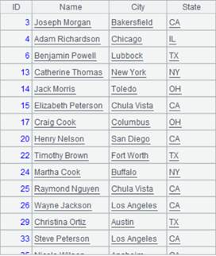
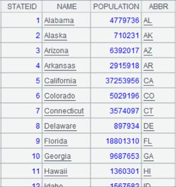

Description:
Build models and performs predictions using the Lasso regression method.
Syntax:
|
lasso(X, Y, learning_rate, iterations) |
The function fits together matrix X and vector Y using the Lasso regression method and returns model information that includes coefficient matrix and intercept. The model information can act as parameter F in lasso(X¡¯, F) to perform a fitting computation |
|
lasso(X¡¯, F) |
The function fits together two matices that have same number of columns – that is, perform predicitions on another matrix X¡¯ using model F, and returns a vector |
Note:
An external library function (See External Library Guide) that builds models and performs predictions using the Lasso regression method.
Parameter:
|
X |
A matrix |
|
Y |
A vector having the same number of rows as matrix X |
|
learning_rate |
Learning rate that is a decimal between 0 and 1; default value is 0.01 |
|
iterations |
Number of iterations; default is 1000 |
|
X¡¯ |
A matrix that has same number of columns as matrix X |
|
F |
The return result of lasso (X, Y, learning_rate, iterations) |
Return value:
Matrix/Vector
Example:
|
|
A |
|
|
1 |
[[19,1],[25,1],[31,1],[38,1],[44,1]] |
|
|
2 |
[19,32.3,49,73.3,97.8] |
|
|
3 |
=lasso(A1,A2,0.001,10000) |
Fit A1 and A2 together using Lasso regression method and return coefficient matrix A3(1) and intercept A3(2).  |
|
4 |
=lasso(A1,A3) |
Perform prediction on A1 using model A3; the result can be compared with actual values in A2.  |